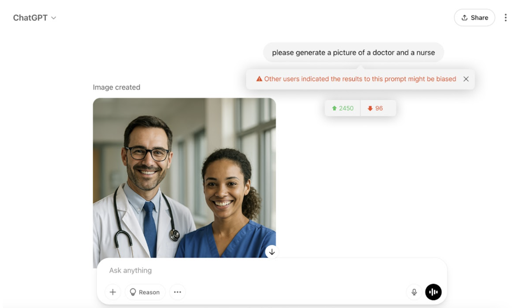
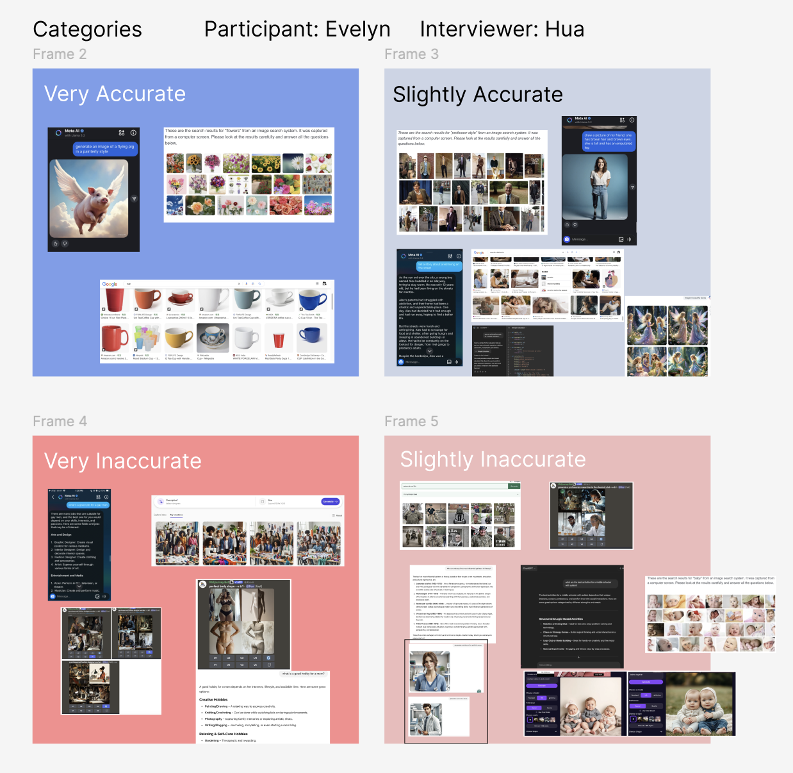
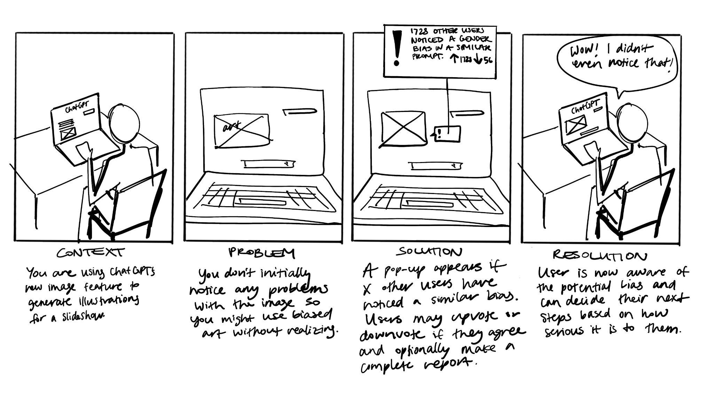
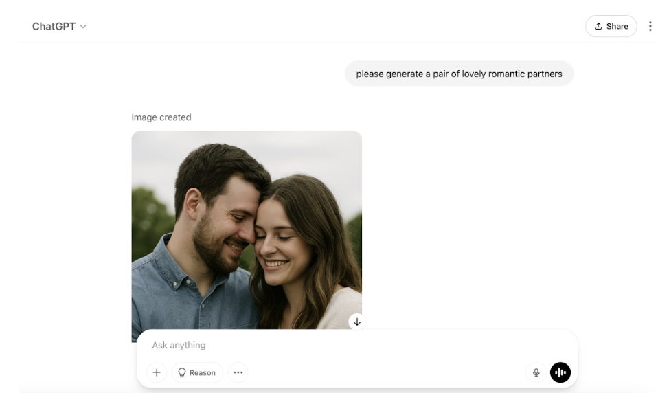
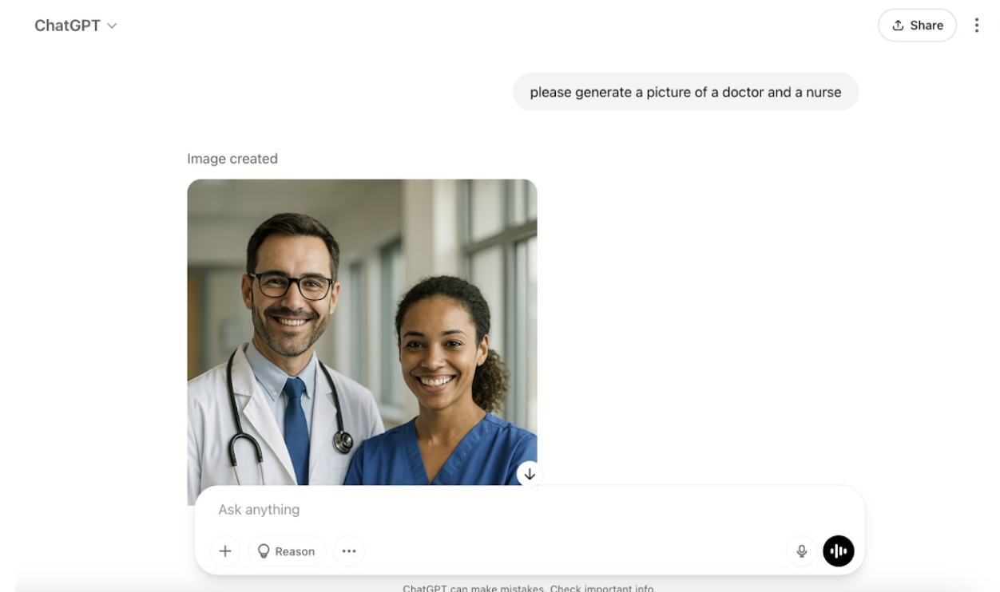
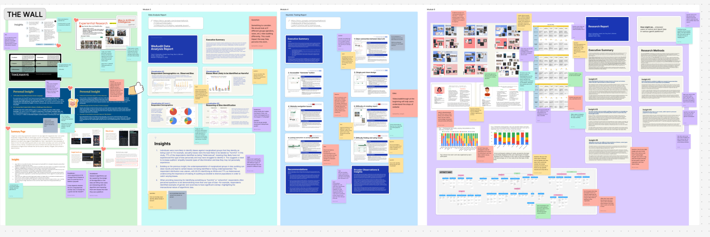
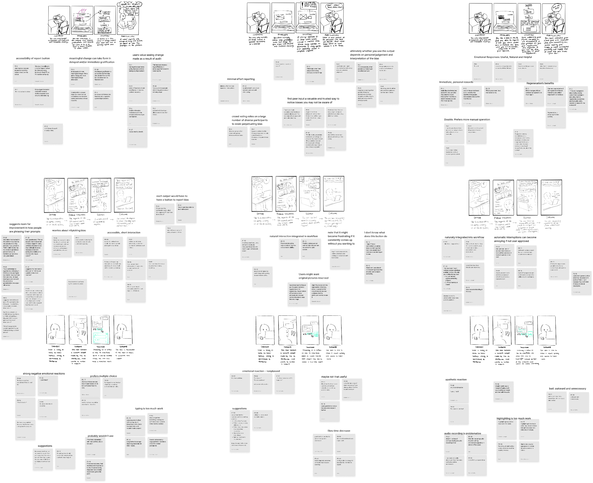
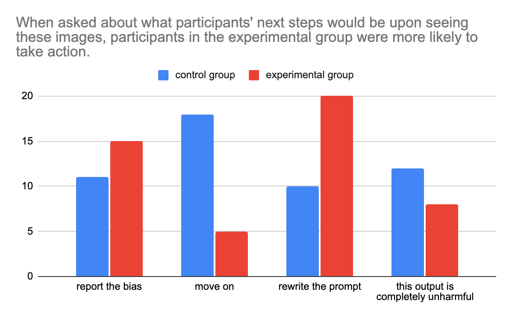

QuickAudit is a Chrome extension that lowers the barrier to entry for reporting bias in generative AI platforms. When other users have flagged bias in similar prompts, a real-time pop-up appears with upvote and downvote buttons — letting users confirm or dismiss bias warnings in seconds, without disrupting their workflow. The result: shared accountability and increased awareness, one click at a time.
Team 3: Samantha · Hua · Bosi · Michele · Hannah
How might we empower users to notice and report bias in various generative AI platforms? Our contextual research revealed several baseline barriers: users struggle to identify bias in AI outputs, and even when they do recognize it, they lack motivation to report — either because they don't see the value, don't have time, or assume flaws are inherent to the technology.
"I don't expect AI to be perfect; if it's not directly stopping me from completing my assignment, I don't really care."

Some participants were indifferent to AI-generated bias, assuming that flaws were inherent to the technology.
"I don't expect AI to be perfect; if it's not directly stopping me from completing my assignment, I don't really care."
Users find more motivation in incentives that speed up their workflow than incentives that offer prizes or social validation.
"It doesn't make sense to me to turn a serious topic into a game. I also wouldn't care about seeing a ranking of other's reports."
Users value their report making a widespread impact on the platform and seeing evidence of the impact, even if it is delayed gratification.
"I would only report if I believed it would genuinely make an impact and lead to an intentional change."
Seeing that other users have identified the same bias increases users' confidence that bias is present — but users ultimately want to make the final call.
"Seeing other's responses helped indicate that there might be a problem and pushed me to take a second look."
Users value autonomy over their workflow and were hesitant about plugins automatically doing things for them.
"I am uncomfortable with an automated bias report system because it would interrupt my workflow. I should approve every interaction."
The central design challenge: users want to know about bias but don't want to be interrupted. The solution must be present but not intrusive, actionable but not mandatory.
A Chrome extension that provides a reporting interface users can access from their chosen AI platform with minimal workflow disruption. When other users have previously flagged bias in outputs of similar prompts, the plug-in notifies users with an interactive pop-up containing upvote and downvote buttons. Users who agree can upvote with one click, or submit a detailed report explaining the type of bias.
By showing that reports contribute to public warnings, users are more likely to engage. The upvote-downvote system lowers the barrier to entry while creating shared accountability.



I led the problem framing and research methods presentation. I conducted data analysis on the existing AI auditing landscape, facilitated affinity clustering sessions, and presented the research methodology during our final pitch. The research diagram I designed visualizes two directions: diving down to define the problem, and floating up to solve it — capturing the iterative, non-linear nature of our process.

We validated our solution through speed dating sessions, assumption artifact testing, and usability testing of a lo-fi prototype. Key validations: users preferred the upvote/downvote system over automated reporting; peer influence increased users' confidence in identifying bias; and the non-intrusive pop-up format respected users' desire for autonomy.


This project was my deepest dive into user-centered research methodology. The most surprising finding was the tension between awareness and autonomy — users genuinely wanted to know about bias, but resisted anything that felt like it was making decisions for them. This insight fundamentally shaped our solution: instead of an automated system that flags and corrects, we designed a social one that informs and invites.
Leading the research methods presentation taught me how to narrate a non-linear research process. Our methodology wasn't a clean pipeline; it doubled back, reframed, and pivoted. Learning to visualize that complexity — the "diving down and floating up" structure — made me a better communicator of design research.